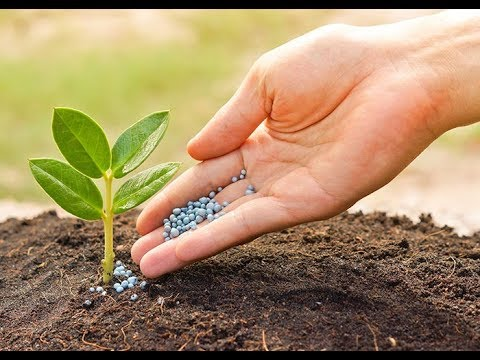

Agriculture. Agriculture is the process of producing food, feed, fiber and many other desired products by the cultivation of certain plants and the raising of domesticated animals (livestock). ... These operations generally attempt to maximize financial income from grain, produce, or livestock.Agriculture. Agriculture is the process of producing food, feed, fiber and many other desired products by the cultivation of certain plants and the raising of domesticated animals (livestock). ... These operations generally attempt to maximize financial income from grain, produce, or livestock.Agriculture. Agriculture is the process of producing food, feed, fiber and many other desired products by the cultivation of certain plants and the raising of domesticated animals (livestock). ... These operations generally attempt to maximize financial income from grain, produce, or livestock.Agriculture. Agriculture is the process of producing food, feed, fiber and many other desired products by the cultivation of certain plants and the raising of domesticated animals (livestock). ... These operations generally attempt to maximize financial income from grain, produce, or livestock.